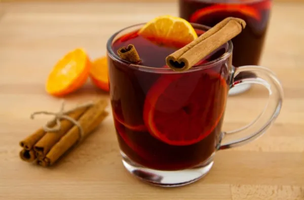

This ginger-lime cider is a traditional Brazilian drink. Wonderfully warm and surprisingly sweet and spicy, Quentão is a fabulous holiday alternative to mulle wine or spiked cider.

Prep time: 25 mins
Servings: 8 servings
Ingredients
1 cup of white sugar
5 cloves
3 cups of water
3/4 cup of cubed fresh ginger root
2 limes, sliced
4 cinnamon sticks, broken in half
1 (750 milliliter) bottle of cachaça (Brazilian rum)
Directions
Pour sugar into 3-quart saucepan and place over medium-high heat. Cook while stirring gently until the sugar melts and turns golden brown.
Carefully and slowly, pour in water, stirring to dissolve the carmel. Add the ginger, lime, cloves and cinnamon; bring to a boil, then reduce heat to medium and simmer for 10 to 15 minutes.
Pour in the cachaça, and cook until hot. Strain before serving.